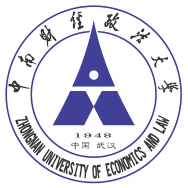
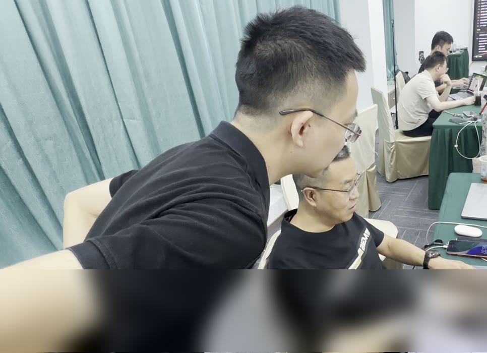

中南财经政法大学
信息管理与信息系统 · 本科
我为传统企业提供 AI 培训和定制落地服务，帮助企业提高收益。


信息管理与信息系统 · 本科
2017 年毕业后开始做企业软件，曾在中国民营企业 500 强、上市企业和创业团队做产品。
先听一线同事怎么做，再把第一版交给他们试，遇到问题就接着改。
跟着君默默君学价值投资，写过消费、科技、医药、制造和能源领域的公司分析。有了新资料，就回头检验自己的判断。
让团队带着手头的业务问题来练习，做出可以带回岗位试用的第一版。
一起找出销售、研发或生产中值得改的流程，做出能让一线同事试用的工作台或工具。
做燃气和环保监管软件，负责业务调研、产品设计和使用培训。
从零规划设备资产管理产品，参与市级工业互联网平台的设计和验收。
做设备接入和生产测试系统，也负责上线培训和后续迭代。
走访企业梳理业务需求，做 AI 培训和定制项目，把实践整理成课程和视频。
学行业研究、公司分析和财报阅读。
整理首次覆盖笔记，持续跟踪行业和公司。
从梳理行业和商业模式，到核对财报、记录判断依据，逐步把研究整理成公司分析报告。
带上自己的产品资料、业务表格或常见问题，现场选一个场景，做出能带回岗位继续试用的初版。
用脱敏案例展示 AI 怎么帮销售、研发和生产团队减少重复工作，把时间用在客户、产品和交付上。
打开工作台把我做上市公司研究的流程做成了公开 Skill。复制提示词，交给 Codex 或支持安装 Skill 的 Agent。
可以先微信聊聊你想解决的业务问题，一起看看适合从团队培训还是流程试点开始。